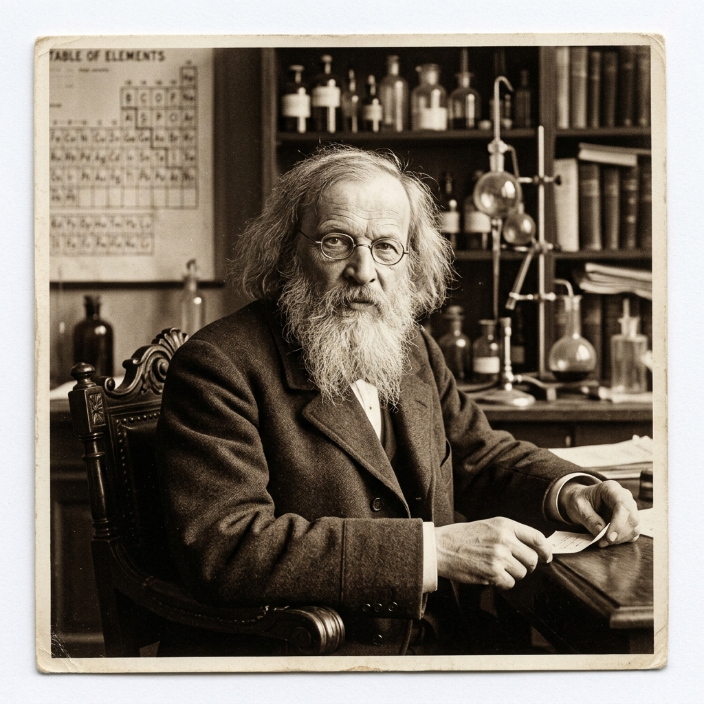

Meu primeiro post
por:Heloa ramos
Boas-vindas ao meu primeiro site de curiosidades científicas! Aqui vou falar sobre as grandes informaçoẽs que talvez vc não saiba e ache fantástico.
Aqui vou compartilhar imagens,informaçoẽs e fatos interessantes sobre tabela periódica .
por:Heloa ramos
Boas-vindas ao meu primeiro site de curiosidades científicas! Aqui vou falar sobre as grandes informaçoẽs que talvez vc não saiba e ache fantástico.

A tabela periódica é um sistema de organização dos elementos químicos existentes, baseado nas semelhanças das suas propriedades físicas e químicas. A tabela dispõe os 118 elementos conhecidos, até então, em ordem crescente de número atômico, os quais são distribuídos em 18 colunas, chamadas de grupos ou famílias, e 7 linhas horizontais, conhecidas como períodos.
A tabela periódica foi concebida em 1869, pelo químico russo Dmitri Mendeleev. O maior trunfo da tabela periódica é que esta pode se adequar à descoberta e inserção de novos elementos nela, sem perder a sua estrutura básica. Isso porque Mendeleev percebeu que as propriedades dos elementos se repetiam depois de uma certa quantidade de elementos passados, ou seja, observando uma periodicidade das propriedades.
class= "fonte>"fonte:https://brasilescola.uol.com.br/quimica/tabela-periodica.htm